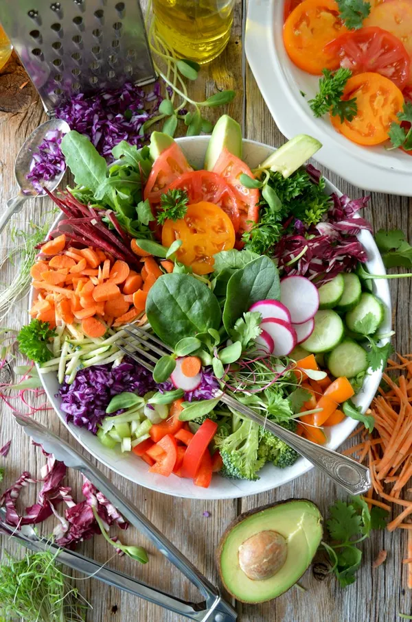
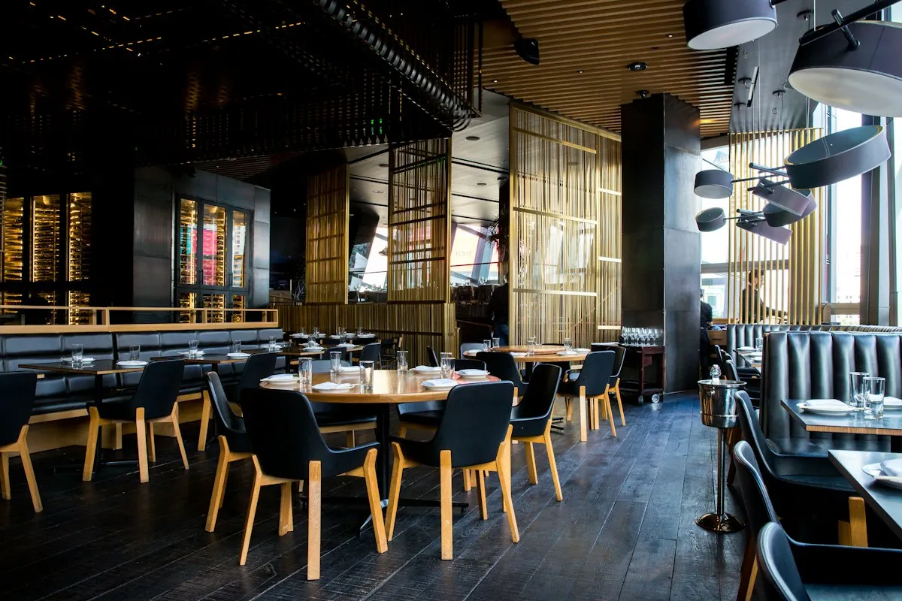
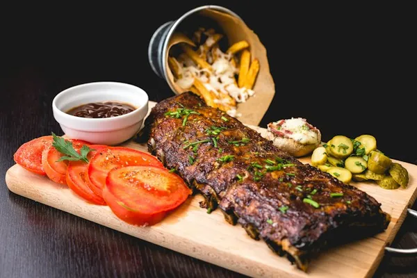
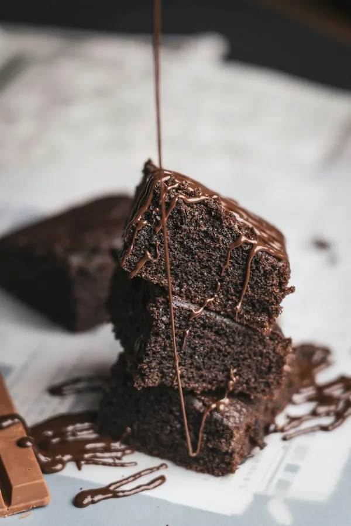

Salade Fraîcheur & Burrata
18 DTBurrata crémeuse, pousses de saison, tomates confites, pignons grillés et pesto au basilic frais.
Savourez des recettes bistronomiques créatives préparées au rythme des saisons avec des produits locaux soigneusement sélectionnés.
Réserver une table

Niché au cœur de la ville, Le Bistro Gourmand est né d'un amour sincère pour la cuisine de terroir réinventée. Notre équipe vous accueille dans un cadre feutré et moderne pour un pur moment de gourmandise.
Chaque jour, nous sélectionnons les meilleurs ingrédients auprès d'artisans et producteurs régionaux afin de concevoir une carte sincère, généreuse et raffinée.
Découvrir notre carteLes créations emblématiques les plus appréciées par nos convives.

Burrata crémeuse, pousses de saison, tomates confites, pignons grillés et pesto au basilic frais.

Pièce de bœuf tendre saisie au beurre mousseux, écrasé de pommes de terre à l'huile d'olive et jus corsé.

Chocolat noir intense 70%, cœur fondant chaud, noisettes torréfiées et boule de glace vanille artisanale.
Le Bistro Gourmand
12 Rue des Saveurs, 75001 Paris
Téléphone : 01 23 45 67 89
Courriel : contact@lebistrogourmand.fr
Mardi à Vendredi : 12h00 - 14h30 & 19h00 - 22h30
Samedi & Dimanche : 12h00 - 15h00 & 19h00 - 23h00
Lundi : Fermé (jour de repos de l'équipe)